A customer segmentation project using K-means clustering, PCA, and t-SNE on 3,900 shoppers — built to answer a question directly tied to a future lifestyle brand my sisters and I are exploring building together.
My sisters and I have talked about building a future lifestyle brand — clothing, a cafe, and other products built around a community, not just a storefront. Before we build anything, I wanted to answer a question that would actually shape strategy: who should we design the loyalty program around — the customer who spends the most in one visit, or the customer who keeps coming back?
Using the Customer Shopping Trends dataset (3,900 customers) from Kaggle, I engineered an "Estimated Annual Value" metric from purchase amount and shopping frequency, then used K-means clustering to group customers into four behavioral personas. I validated the choice of 4 clusters with the elbow method and silhouette scores, then used PCA and t-SNE to visualize how distinct — and how overlapping — those groups actually are.
From there, I profiled each persona by age, spending, frequency, and estimated annual value, and translated the results into concrete business recommendations for loyalty, product strategy, and discounting.
This wasn't just a coursework exercise — it's early market thinking for Tamu Wear, the clothing-and-lifestyle brand my sisters and I are building. Before we design a loyalty program or decide where to spend on acquisition, we need to know whether it's worth chasing the customer who makes one big purchase, or building for the one who shops with us every week. The analysis says the two behave very differently, and the answer changes what a young brand like ours should prioritize first.
Weekly shoppers generate an estimated $3,067 in annual value on average — more than 50x the $60 generated by once-a-year shoppers, even though their individual purchase amounts are nearly identical (~$59 vs. ~$60 per transaction).
Average purchase amount barely moves across frequency groups — it's shopping frequency, not spending per visit, that drives long-term customer value.
Weekly shoppers generate roughly 4x the annual value of monthly shoppers, and more than 50x that of annual shoppers.
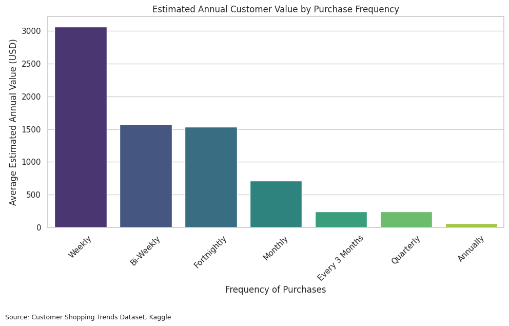
Meanwhile, average purchase amount stays nearly flat ($59–$61) across every frequency group — the value gap above isn't coming from bigger purchases.
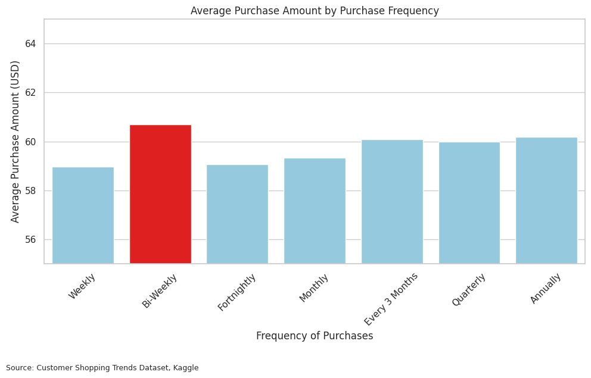
Adding confidence intervals confirms the weekly-shopper gap is statistically meaningful, not noise: weekly customers average $3,067 in estimated annual value, more than 50x the $60 for annual shoppers.
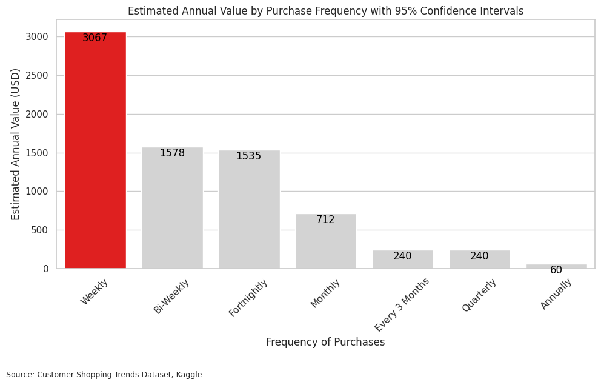
Before jumping to clustering, I checked a few other variables that seemed like they should matter — subscriptions, discounts, product category, and repeat-purchase history — to see what was actually driving value versus what was just noise.
Subscribers average $1,061.54 vs. $1,030.57 for non-subscribers — a real but modest difference, not a major value driver on its own.
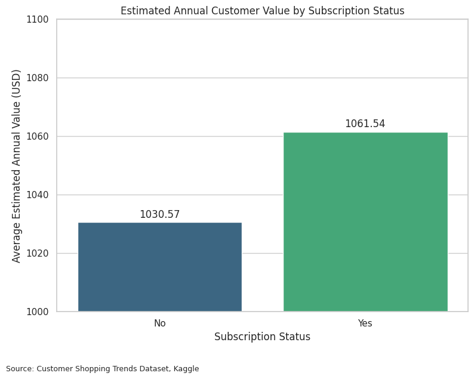
Non-discount customers ($1,041.74) actually average slightly higher annual value than discount users ($1,035.20) — discounts aren't what makes a customer valuable.
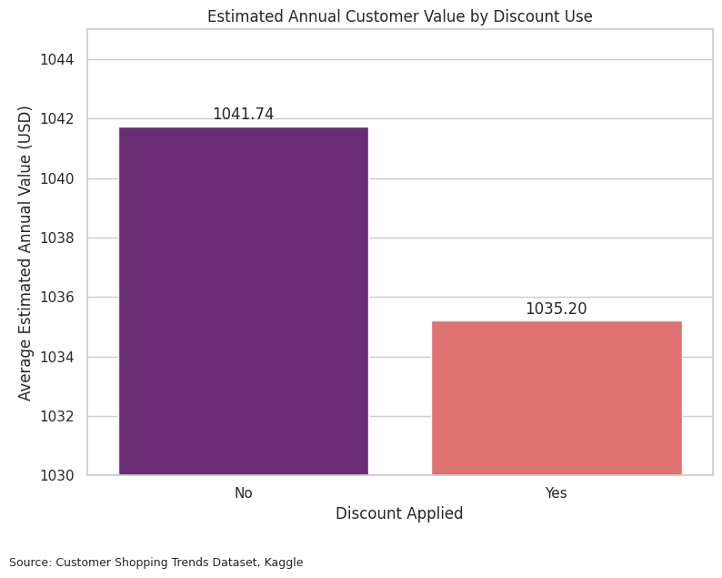
Clothing dominates purchase volume (1,737), well ahead of accessories, footwear, and outerwear — relevant context for a brand centered on clothing and a cafe.
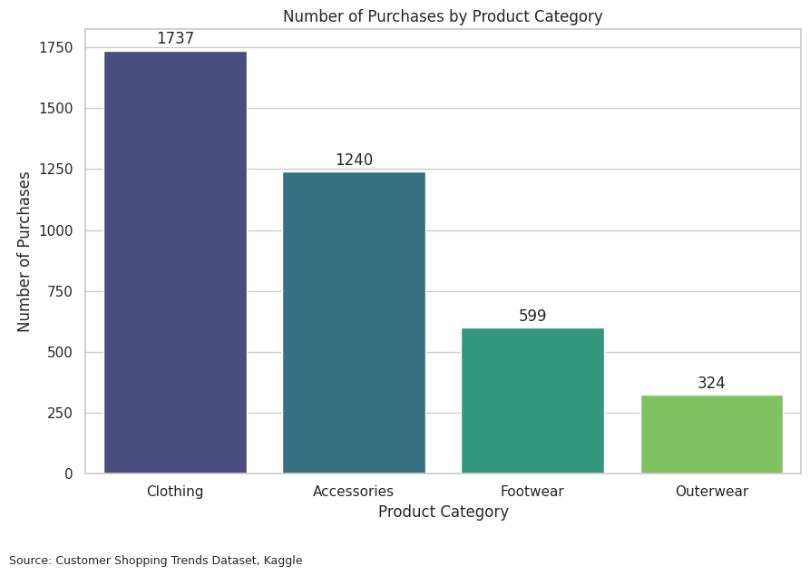
Correlation of just 0.008 — customers who've bought more times before don't spend meaningfully more per transaction. Purchase history predicts frequency, not transaction size.
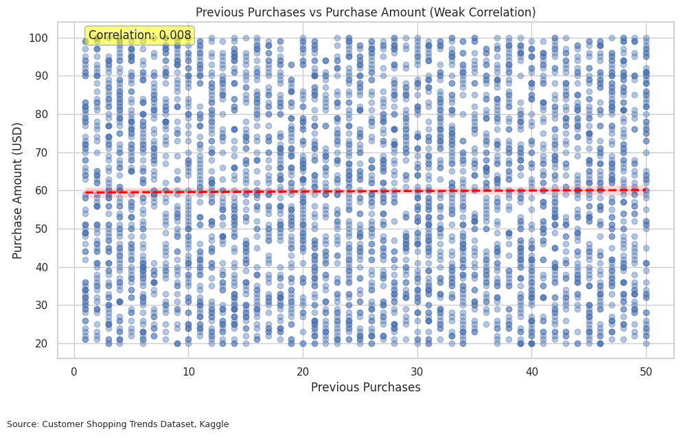
I tested cluster counts using the elbow method and silhouette scores. Two clusters scored highest mathematically, but four created far more useful, explainable personas — so I chose interpretability over the single highest metric.
Frequent shoppers with high estimated annual value — not the biggest single spenders, but the most valuable over time. 1,025 of the 3,900 customers.
Spend the most per transaction ($82 avg) but shop far less often — under 5 estimated purchases a year. 995 customers.
Youngest group (avg. age 30) with moderate spending and moderate frequency — not yet high-value, but early and reachable. 925 customers.
Oldest group (avg. age 57) with repeat purchase behavior but lower spend per visit. 955 customers.
High-Value Regulars sit well above the other three personas, and the gap holds up under statistical testing — this isn't just cluster noise.
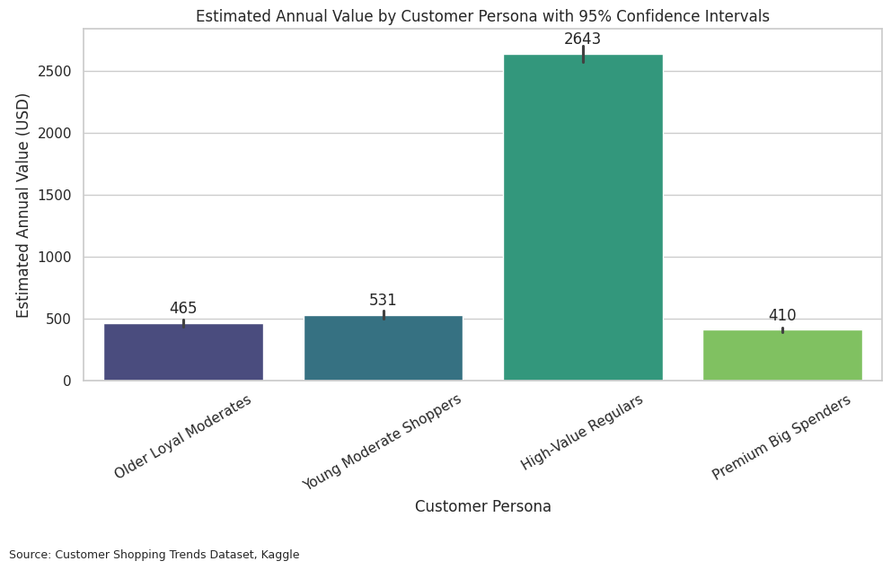
K-means groups customers by similarity, but the groups mean nothing until they're validated and visualized. I used the elbow method and silhouette scores to pick the number of clusters, then two dimensionality-reduction techniques to check whether the personas actually separate.
Inertia drops steadily with more clusters but never shows one obvious "elbow" — this chart alone doesn't settle the choice.
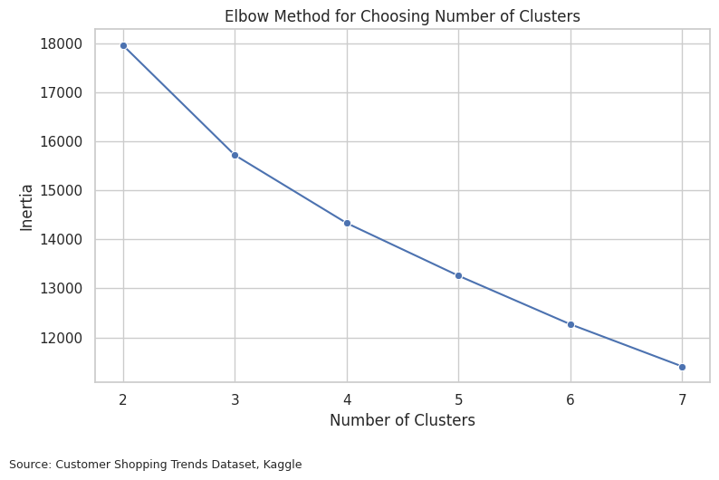
Silhouette score actually peaks at 2 clusters. I chose 4 anyway, trading a bit of mathematical separation for personas a business can act on.
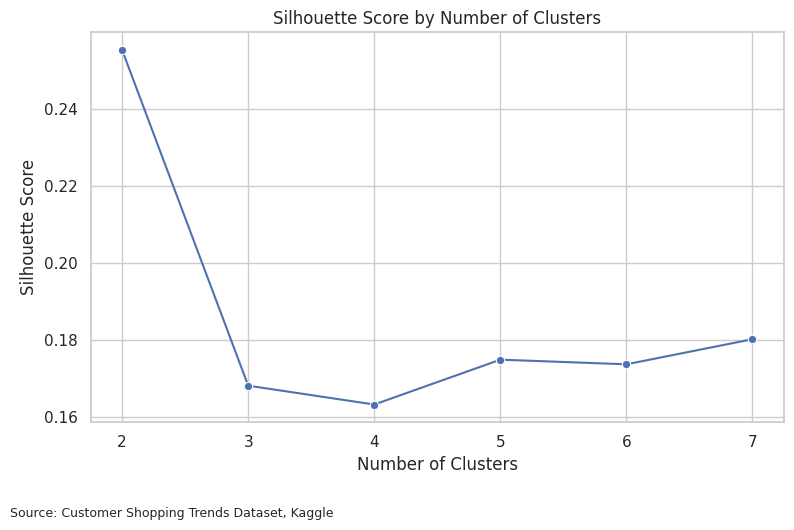
Principal Component Analysis compresses six customer variables into two dimensions. PC1 (x-axis) mainly reflects long-term value and purchase frequency; PC2 (y-axis) mainly reflects age and past purchase behavior. Together they capture about 50% of total variance — enough to show real structure, but not a complete picture. High-Value Regulars (green) sit clearly further right on PC1, though the groups still overlap.
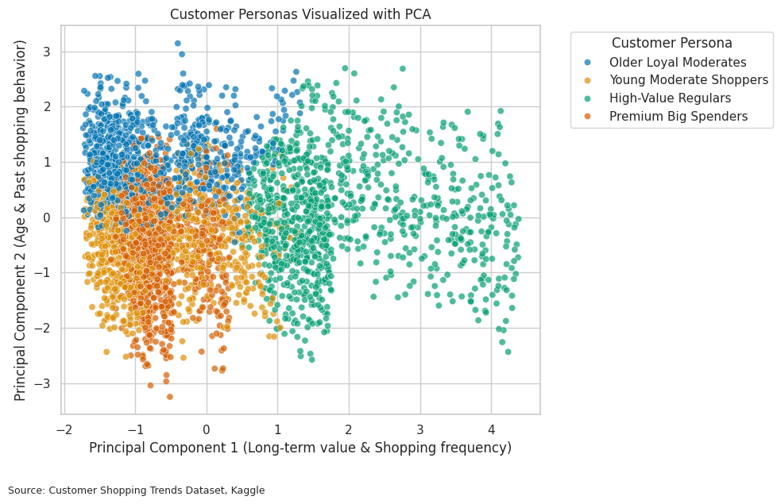
This heatmap shows what each principal component actually represents: PC1 is driven mostly by Estimated Annual Value (0.71) and Estimated Annual Purchases (0.66); PC2 is driven mostly by Age (0.63) and Review Rating (-0.49).
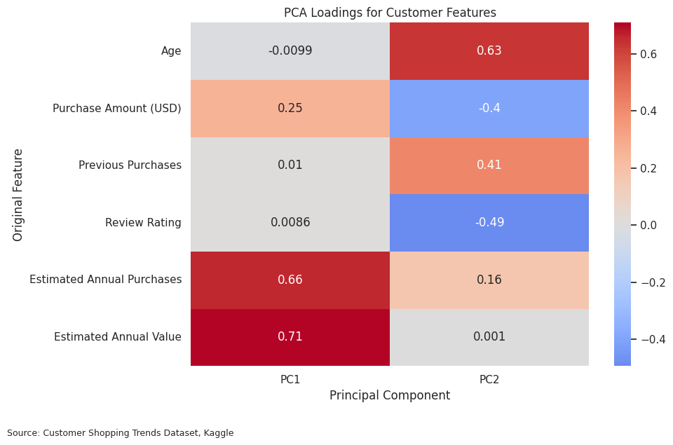
Because PCA is linear, I added t-SNE, a nonlinear method, to check the pattern held up. It shows clearer separation than PCA, though t-SNE's axes don't carry direct business meaning — it's a visualization check, not the evidence itself.
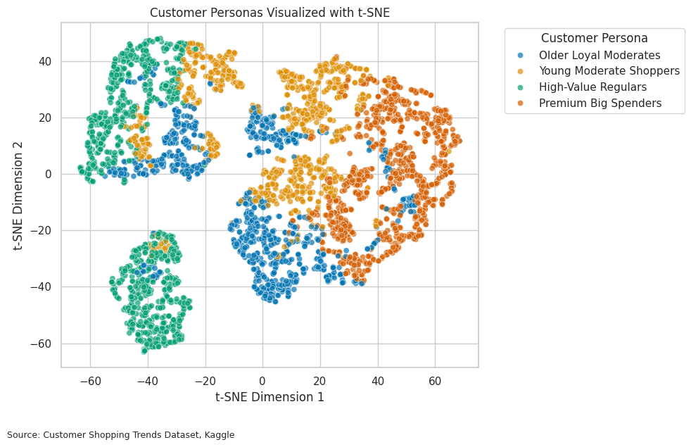
The silhouette score was mathematically highest at 2 clusters, but 2 groups would be too simple to act on. 4 clusters balanced statistical validity with personas a business can actually design strategy around.
PCA is linear, so the personas showed real overlap rather than clean separation — a limitation worth naming, not hiding. t-SNE, a nonlinear method, confirmed the pattern held under a different lens.
The overall takeaway: don't only chase big spenders. Loyal, repeat customers create more value over time, but each persona still needs its own strategy.
Prioritize rewards, early access, and membership perks for High-Value Regulars — they're the most valuable segment, driven by frequency rather than one large purchase.
Clothing purchases happen occasionally; cafe visits can happen weekly. Connecting a points system across both sides turns two businesses into one lifestyle brand.
Discount users showed almost no difference in annual value ($1,035 vs. $1,042 for non-discount users) — so discounts should target specific moments, not become the core strategy.